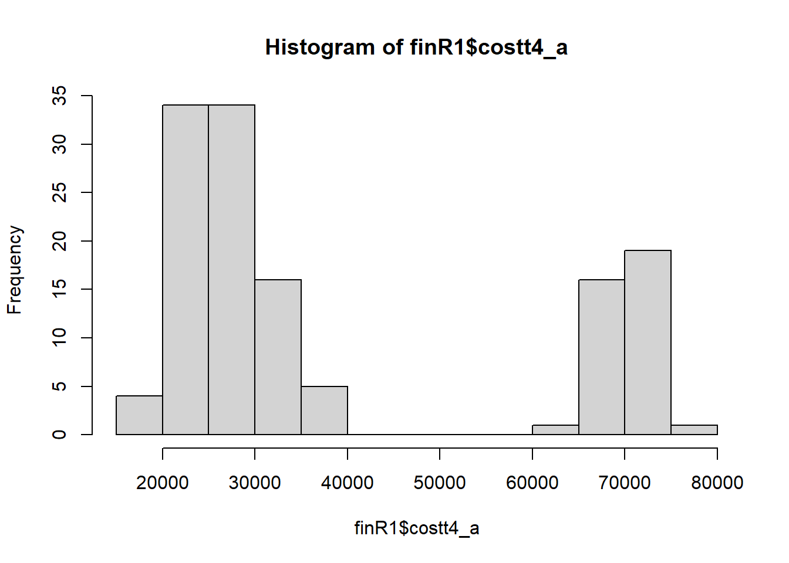
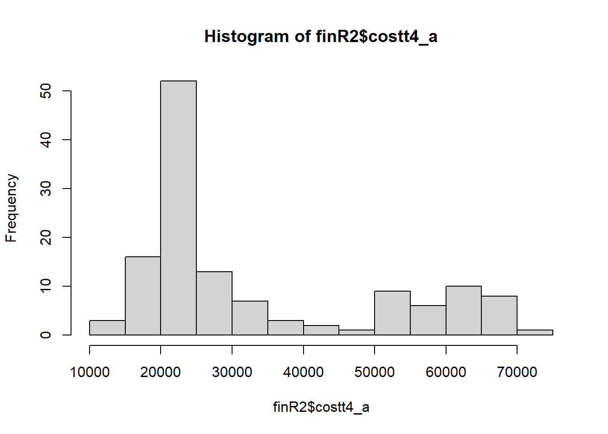
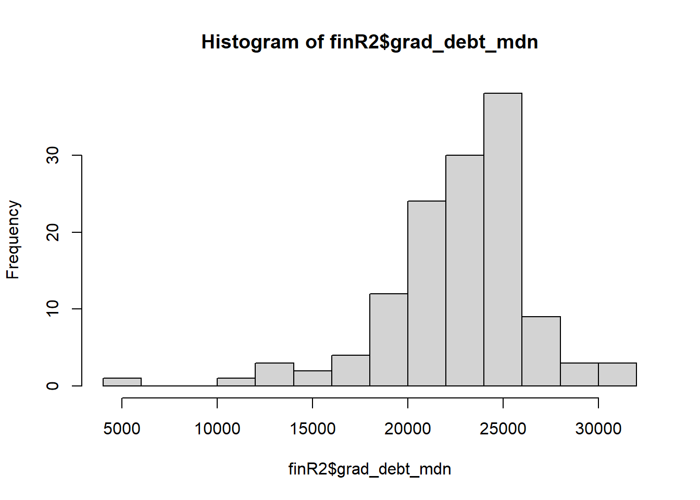
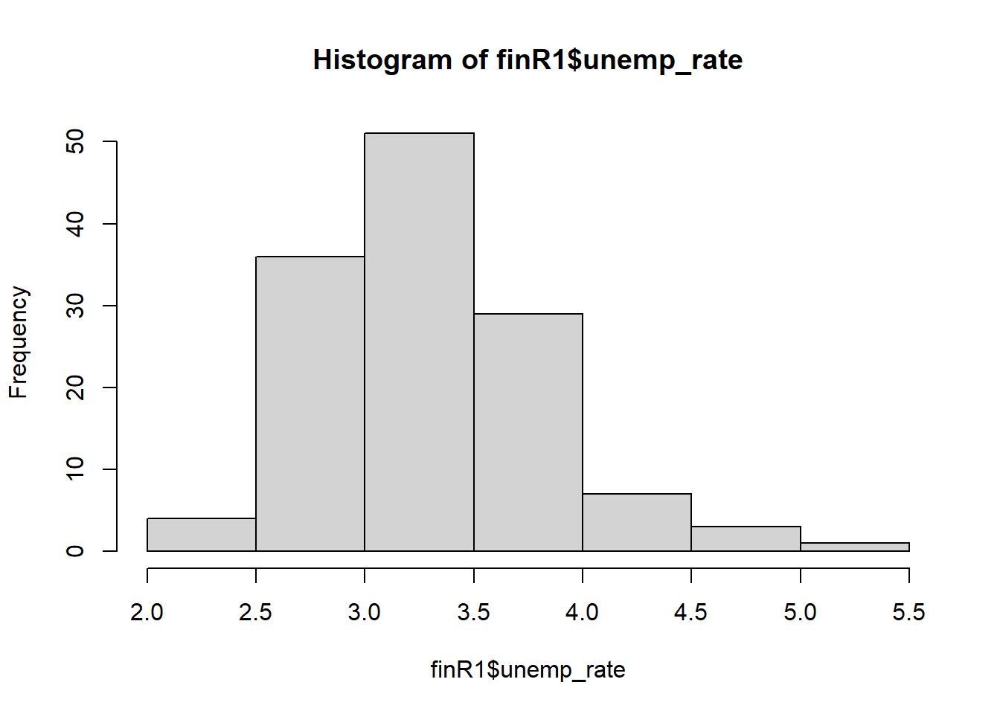
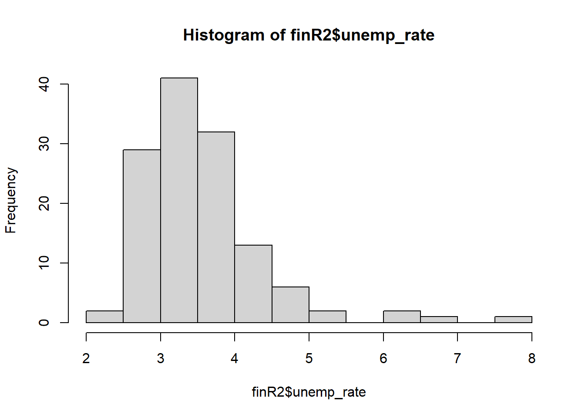

Section 4 Analysis
4.1 Import
4.2 Transform Datasets
dem <- temp[,-(20:24)]
finR <- fin[fin$ccbasic == c(15,16) & fin$X < 267,]
finR1 <- fin[fin$ccbasic == 15 & fin$X < 267,]
finR2 <- fin[fin$ccbasic == 16 & fin$X < 267,]
demR <- dem[dem$ccbasic == c(15,16) & dem$X < 267,]
demR1 <- dem[dem$ccbasic == 15 & dem$X < 267,]
demR2 <- dem[dem$ccbasic == 16 & dem$X < 267,]4.3 Descriptive time!
## Min. 1st Qu. Median Mean 3rd Qu. Max.
## 0.0573 0.3900 0.5072 0.5129 0.6763 0.8408## [1] -0.2433317## [1] 2.272319## Min. 1st Qu. Median Mean 3rd Qu. Max. NA's
## 0.0000 0.4507 0.6242 0.5529 0.7326 0.9348 4## [1] NA## [1] NA## [1] "Tuition cost"## Min. 1st Qu. Median Mean 3rd Qu. Max. NA's
## 16927 24464 28408 38695 66923 75735 1
## Min. 1st Qu. Median Mean 3rd Qu. Max. NA's
## 11299 21266 24098 33613 51214 71875 4
## [1] "Student debt"## Min. 1st Qu. Median Mean 3rd Qu. Max.
## 8700 17634 20000 19652 22027 27000
## Min. 1st Qu. Median Mean 3rd Qu. Max. NA's
## 5500 20930 23167 22719 25000 30500 5
## [1] "Unemployment Rate"## Min. 1st Qu. Median Mean 3rd Qu. Max.
## 2.190 2.965 3.200 3.293 3.605 5.020
## Min. 1st Qu. Median Mean 3rd Qu. Max. NA's
## 2.320 3.040 3.360 3.545 3.900 7.920 6